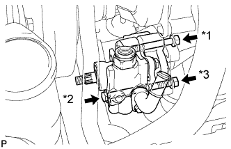
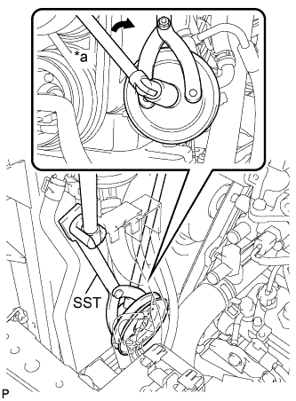

ЛОПАСТНОЙ НАСОС (для моделей с 5L-E) > УСТАНОВКА |
| 1. УСТАНОВИТЕ ЛОПАСТНОЙ НАСОС В СБОРЕ |
|  |
Установите лопастной насос и закрепите его 2 болтами и гайкой.
| *1 | А |
| *2 | B |
| *3 | C |
| 2. УСТАНОВИТЕ ШКИВ ЛОПАСТНОГО НАСОСА |
|  |
С помощью SST установите шкив лопастного насоса на лопастной насос.
| *a | Поверните |
| 3. УСТАНОВИТЕ КОЖУХ ВЕНТИЛЯТОРА |
Установите кожух вентилятора (Нажмите здесь).
| 4. ПОДСОЕДИНИТЕ ПАТРУБОК ПОДАЧИ ДАВЛЕНИЯ В СБОРЕ |
Установите новую прокладку на нагнетательный патрубок.
Подсоедините нагнетательный патрубок к лопастному насосу с помощью болта-штуцера.
| 5. ПОДСОЕДИНИТЕ ШЛАНГ № 1 СОЕДИНЕНИЯ МАСЛЯНОГО БАЧКА С НАСОСОМ |
Подсоедините шланг к лопастному насосу с помощью фиксатора.
| 6. УСТАНОВИТЕ ПОЛИКЛИНОВОЙ РЕМЕНЬ ЛОПАСТНОГО НАСОСА |
Временно установите поликлиновой ремень.
Отрегулируйте натяжение ремня с помощью стержня.
Затяните болт и гайку.
Проверьте натяжение поликлинового ремня (Нажмите здесь).
| 7. ДОБАВЬТЕ ЖИДКОСТЬ ДЛЯ МЕХАНИЗМА РУЛЕВОГО УПРАВЛЕНИЯ С УСИЛИТЕЛЕМ |
| 8. УДАЛИТЕ ВОЗДУХ ИЗ ЖИДКОСТИ ДЛЯ МЕХАНИЗМА РУЛЕВОГО УПРАВЛЕНИЯ С УСИЛИТЕЛЕМ |
Проверьте уровень жидкости.
Поддомкратьте переднюю сторону автомобиля и установите ее на подставки.
Поверните рулевое колесо.
При выключенном двигателе медленно поверните рулевое колесо между мертвыми точками несколько раз.
Опустите автомобиль.
Запустите двигатель.
Дайте двигателю поработать на холостом ходу в течение нескольких минут.
Поверните рулевое колесо.
Во время работы двигателя на холостом ходу поверните рулевое колесо влево или вправо до упора и удерживайте его в таком положении в течение 2-3 с, затем поверните в противоположном направлении до упора и удерживайте его в этом положении также в течение 2-3 с.*1
Повторите операцию *1 несколько раз.
Выключите двигатель.
 |
Проверьте отсутствие вспенивания и эмульсификации.
| *a | ПРАВИЛЬНО |
| *b | НЕПРАВИЛЬНО |
Проверьте уровень жидкости.
| 9. ПРОВЕРЬТЕ, НЕТ ЛИ УТЕЧЕК ЖИДКОСТИ ДЛЯ МЕХАНИЗМА РУЛЕВОГО УПРАВЛЕНИЯ С УСИЛИТЕЛЕМ |